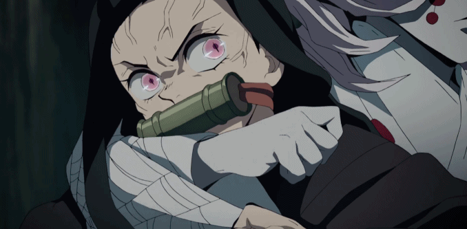
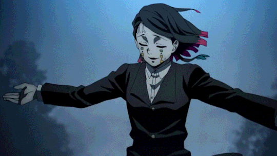
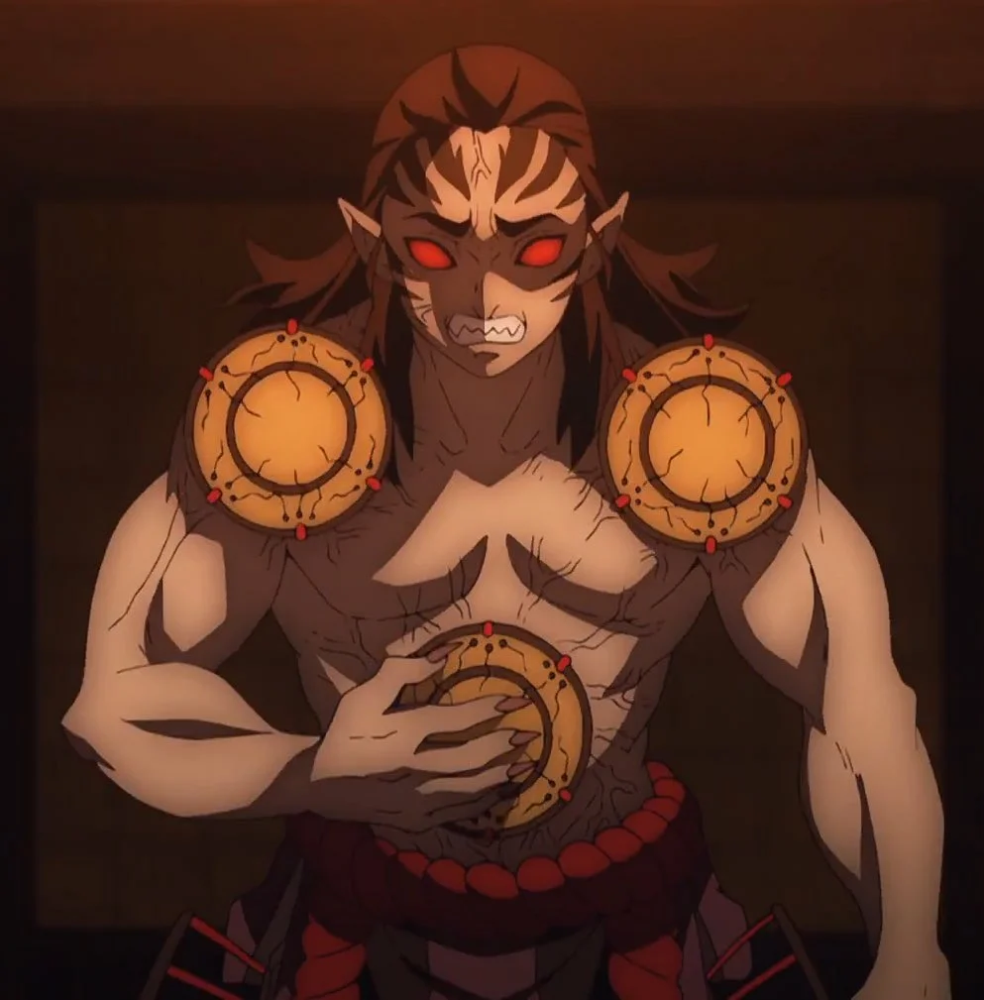
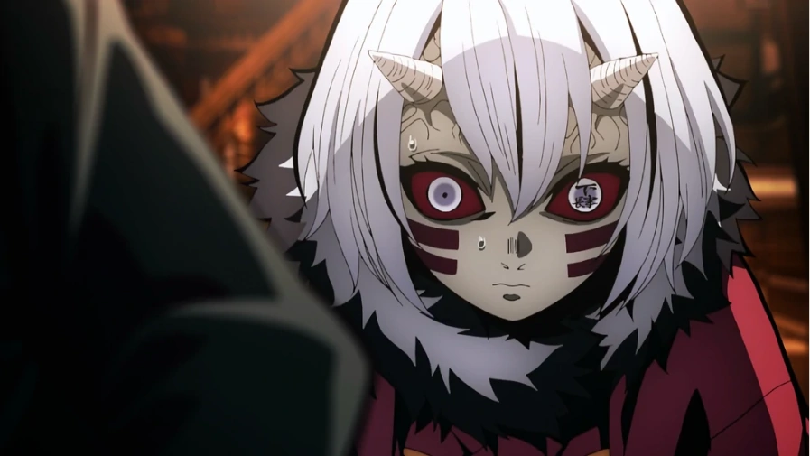

РУИ

ПЯТАЯ МЛАДШАЯ ЛУНА
Руи был беспокойным человеком, который желал тесных связей, которые есть в семье, и ожидал, что члены семьи будут выполнять свои собственные роли. Для него "члены семьи", которые не выполняют свои роли так, как он ожидает (а именно, чтобы безоговорочно защищать Руи или следовать его инструкциям), бесполезны и так же хороши, как мертвые.
sdf
ЭНМУ

ПЕРВАЯ МЛАДШАЯ ЛУНА
Энму показан как личность мечтательная и несколько странная, в начале проявляя на фоне всеобщей паники безмятежность и зачастую сохраняя спокойствие, однако позже обнажая жестокость и садизм, выраженный в первую очередь в извращенном упоении чужими страданиями. Он проявляет особое отношение к Музану, вследствие чего и остается жив.
sdf
КЁГАЙ

ШЕСТАЯ (БЫВШАЯ) МЛАДШАЯ ЛУНА
Кёгай относительно спокойный и искренний человек, несмотря на то, что он кровожадный демон. Вместо того, чтобы кричать или реветь от раздражения, Кёгай тихо бормочет о том, что его раздражает. Он считает, что это грубо, что люди врываются в его дом и уничтожает их за то, что они мешают ему. Если он достаточно раздражен, Кёгай повысит голос о неприятностях и оскорбит его противников.
sdf
МУКАГО

ЧЕТВЕРТАЯ МЛАДШАЯ ЛУНА
Из всех Нижних Лун Мукаго оказалась самой трусливой, как узнал Музан, прочитав мысли Мукаго, она не собирается сражаться с столпами Корпуса Истребителей Демонов и вместо этого решила сбежать, просто думая о встрече с одним противником. За трусость и отказ подчиняться приказам, Мукаго была убита Музаном.
sdf